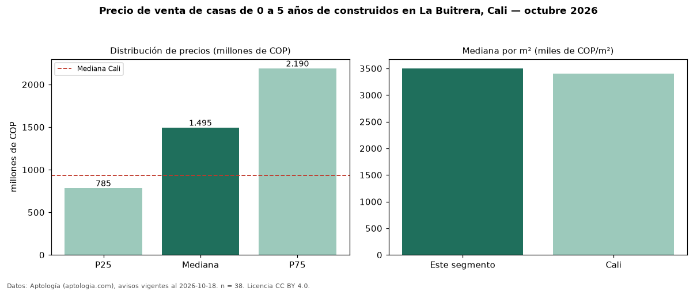

Precio de venta de casas de 0 a 5 años de construidos en La Buitrera, Cali — octubre 2026
Con 38 avisos vigentes, el precio mediano de casas de 0 a 5 años de construidos en venta en La Buitrera, Cali es COP 1,50 mil millones. Eso es 3 % más que la mediana de todas las casas en venta de La Buitrera (COP 1,45 mil millones, n = 55); este segmento reúne el 69 % de esos avisos. Por metro cuadrado, la mediana es COP 3,50 millones/m² (n = 33), 12 % por encima del conjunto de referencia (COP 3,12 millones/m²). La mitad central de los avisos va de COP 785 millones a COP 2,19 mil millones (razón 2,8), una dispersión alta. El área mediana anunciada es 380 m². El segmento con más oferta es el de 3 o más habitaciones (37 avisos, mediana COP 1,49 mil millones). El estrato más frecuente es 4 (32 % de los avisos con estrato). La mediana de todas las casas en venta de Cali es COP 930 millones (+61 % de diferencia). Datos: Aptología (aptologia.com), CC BY 4.0 — https://www.aptologia.com/casas-en-venta/cali/la-buitrera. Archivos: PDF, CSV con las cifras y gráfica PNG.

| Avisos únicos | 38 |
|---|---|
| Percentil 25 | COP 785.000.000 |
| Mediana | COP 1.495.000.000 |
| Percentil 75 | COP 2.190.000.000 |
| Mediana por m² | COP 3.502.415 |
Fuente: avisos vigentes de portales inmobiliarios recopilados por Aptología, deduplicados (mínimo 30 avisos únicos por celda). Precios pedidos, no cerrados. Fecha: 2026-10-18.